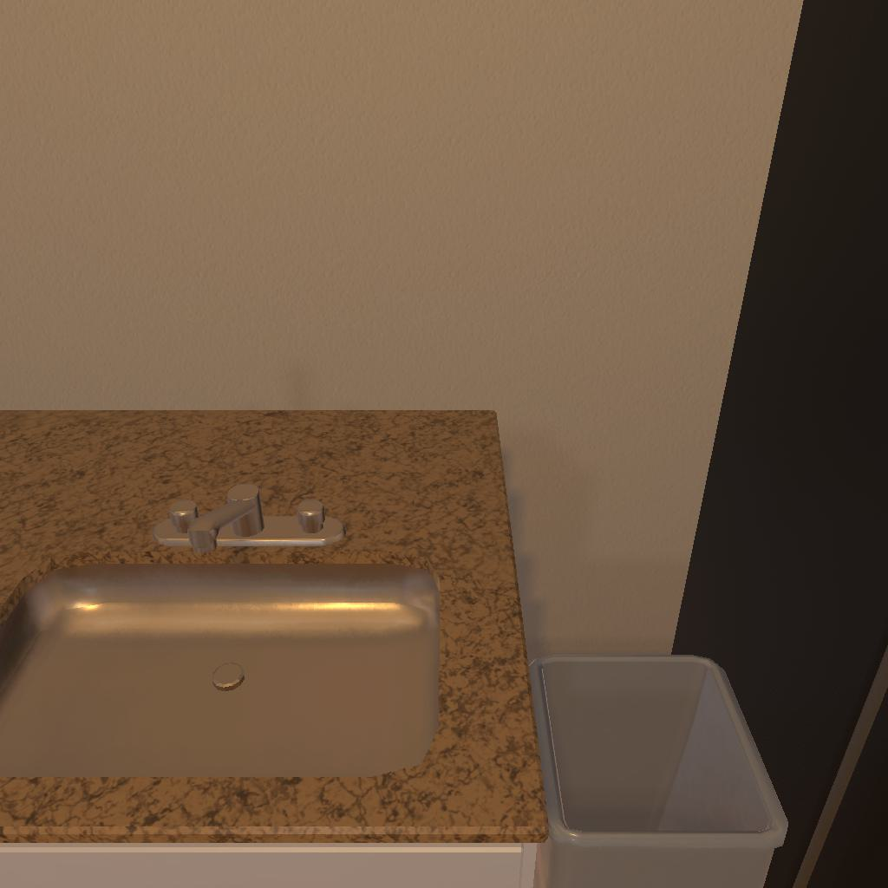

---------------------------------------------------------task: 13---------------------------------------------------------
--------------------------------------------------------------------------------------------------------------------------------------------------------------------
--------------------------------------------------------------------------------------------------------------------------------------------------------------------
Step:--------------------------------------------------------------------------0-------------------------------------------------------------------------------
----------------------------------------
VLM Prompt:
Image1:
**Instruction**
1. Analyze the provided images to identify all visible household objects and compare the difference between images (e.h. whether the object is opened or not and taken on hand or not), focusing on those relevant to the task description "clean some tomato and put it in garbagecan."
2. Use the analysis of images and the task hint "The agent must find an object of the desired type, pick it up, go to a sink or a basin, clean the object with a sink or basin, and then find the correct location to place it and put it down there. The agent does not need to use soap bottle or faucet to clean the object, and the agent just needs to do action that is "clean the object with the sink or sink basin"." to answer the question: what is the most reasonable action in the choices for the task description "clean some tomato and put it in garbagecan"?
3. Decide and write the answer using the template: The answer is: (i): , where i is the real number. If there is no desired object in images, search every place based on **Initial Observation** to find the object. And if no one is exactly correct, choose a similar answer.
**Initial Observation**
You are in the middle of a room. Looking quickly around you, you can see countertop (1-2), cabinet (1-11), garbagecan (1), toaster (1), sinkbasin (1), fridge (1), sink (1), microwave (1), drawer (1-3), stoveburner (1-4), coffeemachine (1), diningtable (1)
**Answer Choices**
(1): go to countertop 1
(2): go to cabinet 1
(3): go to cabinet 2
(4): go to cabinet 3
(5): go to garbagecan 1
(6): go to cabinet 4
(7): go to toaster 1
(8): go to sinkbasin 1
(9): go to fridge 1
(10): go to sink 1
(11): go to cabinet 5
(12): go to microwave 1
(13): go to countertop 2
(14): go to cabinet 6
(15): go to cabinet 7
(16): go to drawer 1
(17): go to stoveburner 1
(18): go to stoveburner 2
(19): go to cabinet 8
(20): go to drawer 2
(21): go to stoveburner 3
(22): go to stoveburner 4
(23): go to coffeemachine 1
(24): go to cabinet 9
(25): go to cabinet 10
(26): go to cabinet 11
(27): go to diningtable 1
(28): go to drawer 3
**Answer**
Let's think step by step by following the instructions.
----------------------------------------
----------------------------------------
Original Response:
Image 1 shows a sink basin and a garbage can. There is no visible tomato or any object that needs to be cleaned or disposed of in the garbage can.
Based on the task description "clean some tomato and put it in garbagecan," the agent must first find a tomato. Since there are no tomatoes visible in the images provided, the agent must search the locations listed in the initial observation to find a tomato.
The most likely places to find a tomato would be the countertop, fridge, or cabinet where food is usually stored. The task doesn't require the agent to use a toaster, coffee machine, microwave, stove burner, or dining table for cleaning a tomato.
Therefore, the most reasonable action would be to look for the tomato in the places where food is stored. Once the tomato is found, the agent can then go to the sink basin to clean it and then to the garbage can to dispose of it.
The answer is: (9): go to fridge 1
----------------------------------------
----------------------------------------
>>> Refine Original VLM Response and Get Pure Action: go to fridge 1
----------------------------------------
-----------------------------------------------------------------
Running time: 7.87804388999939 seconds
Total Money: 5.789830000000003
-----------------------------------------------------------------
-----------------------------------------------------------------
Text Observation:You arrive at loc 8. The fridge 1 is closed.
-----------------------------------------------------------------
UNSUCCEED